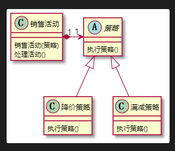
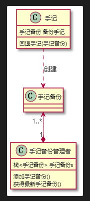
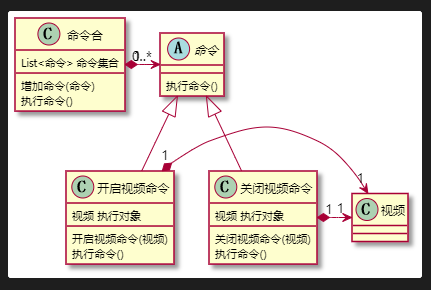
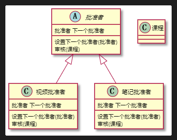
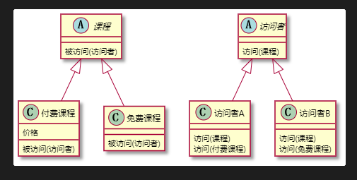
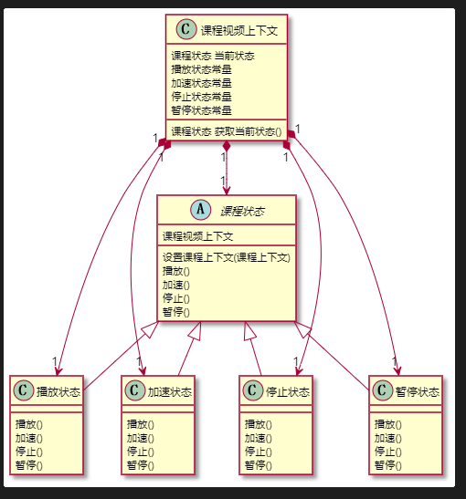

设计模式学习笔记——第五章
设计模式学习笔记——第五章
本文章是我在学习设计模式的时候所记下的笔记，只供我个人学习复习使用，不适合系统的学习，本文章的推荐资料也会在此贴出来。
返回设计模式首页
第五章 行为型设计模式
模板方法模式
定义:定义了一个算法的骨架，并允许子类为一个或多个步骤提供实现。模板方法使得子类可以在不改变算法结构的情况下，重新定义算法的某些步骤。
优点：提高复用性，提高扩展性，符合开闭原则。
缺点：类数目增加。增加了系统实现的复杂度，继承关系自身缺点，如果父类添加新的抽象方法，所有子类都要改一遍。
扩展：钩子方法。
所谓钩子方法，就是父类在模板方法中加入一些可选项 调用某方法返回Boolean 决定是否执行某个步骤 默认不执行 由子类重写 判断逻辑 执行某步骤
迭代器模式
定义：提供了一种方法，顺序访问一个集合对象中的各个元素，而又不暴露该对象的内部表示。
适用场景：访问一个集合对象的内容而无需暴露它的内部表示。
优点：分离了集合对象的遍历行为。
缺点：类的个数成对增加
策略模式
定义：定义了算法家族，分别封装起来，让它们之间可以互相替换，该模式让算法的变化不会影响到使用算法的用户。
扩展： if…else..
使用场景：系统有很多类，而他们的区别仅仅在于他们的行为不同。一个系统需要动态地在几种算法中选择一种。
优点：开闭原则，避免使用多重条件转移语句，提高算法的保密性和安全性。
缺点：客户端必须知道所有的策略类，并自行决定使用哪个策略类。会产生很多策略类。
1 | @startuml 策略模式 |

解释器模式
定义：给定一个语言，定义它的文法的一种表示，并定义一个解释器，这个解释器使用该表示来解释语言中的句子。为了解释一种语言，而为语言创建的解释器。
使用场景：某个特定类型问题发生频率足够高。
优点：语法由很多类表示，容易改变及扩展此“语言”。
缺点：当语法规则数目太多时，增加了系统复杂度。
观察者模式
定义：定义了对象之间的一对多依赖，让多个观察者对象同时监听某一个主题对象，当主题对象发生变化时，它的所有依赖者(观察者)都会收到通知并更新
适用场景：关联行为场景，建立一套触发机制。
优点：观察者和被观察者之间建立一个抽象的耦合。观察者模式支持广播通信。
缺点：观察者之间有过多的细节依赖、提高时间消耗以及程序复杂度。适用要得当，要避免循环调用。
备忘录模式
定义：保存一个对象的某个状态，以便再适当的时候恢复对象。后悔药。
适用场景：保存及回复数据相关业务场景。后悔的时候，即想恢复到之前的状态。
优点：为用户提供一种可恢复机制。存档信息的封装。
缺点：资源占用。

命令模式
定义:将“请求”封装成对象，以便使用不同的请求。命令模式解决了应用程序中对象的职责以及它们之间的通信方式。
适用场景：请求调用者和请求接收者需要解耦，使得调用者和接收者不直接交互。
优点：降低耦合。容易扩展新命令或者一组命令
缺点：命令的无限扩展会增加类的数量，提高系统实现的复杂度。
1 | @startuml 命令模式 |

中介者模式
定义：一个封装一组对象如何交互的对象。通过使对象明确地相互引用来促进松散耦合，并允许独立地改变它们的交互。
适用场景：系统中对象之间存在复杂的引用关系，产生的相互依赖关系结构混乱且难以理解。交互的公共行为，如果需要改变行为则可以增加新的中介者类。交互的公共行为，如果需要改变行为则可以增加新的中介者类。
优点：将一对多转化成了一对一、降低程序复杂度。类之间解耦。
缺点：中介者过多，导致系统复杂。
责任链模式
定义：为请求创建一个接收此次请求对象的链。
适用场景：一个请求的处理需要多个对象当中的一个或几个协作处理。
优点：请求的发送者和接收者（请求的处理）解耦。责任链可以动态组合。
缺点：责任链太长或者处理时间过长，影响性能。责任链有可能过多。
1 | @startuml 责任链模式 |

访问者模式
定义：封装作用于某数据结构(如List/Set/Map等)中的各个元素的操作。可以在不改变各元素的类的前提下，定义作用于这些元素的操作。
使用场景：一个数据结构如(List/Set/Map等)包含很多类型对象。数据结构与数据操作分离。
优点：增加新的操作很容易，即增加一个新的访问者。
缺点: 增加新的数据结构困难，具体元素变更有些困难。
1 | @startuml 访问者模式 |

可能看UML类图比较难以理解，我自己理解是 课程类中有个被访问方法 在方法中调用 访问者的访问方法 将自身传递进去 然后访问者根据课程的类型 执行不同的重载方法(如果要是没有具体类的方法就会执行默认的方法)会有一种动态绑定的感觉
状态模式
定义：允许一个对象在其内部状态改变时，改变它的行为。
适用场景：一个对象存在多个状态(不同状态下行为不同),且状态可相互转换。
优点：将不同的状态隔离。将各种状态的转换逻辑，分布到State的子类中，减少相互间的依赖。增加新的状态非常容易。
缺点:状态多的业务场景导致类数目增加。
1 | @startuml 状态模式 |

看这个UML类图 可能还是没有不怎么清晰 大体思路就是 所有课程状态类都要包含所有状态的操作的方法 如果要是与当前状态不符合 就反过来调用课程上下文对象的切换方法 动态转换根据行为转变状态。 （还是好抽象… 阿巴阿巴阿巴阿巴）